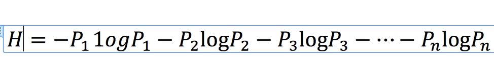
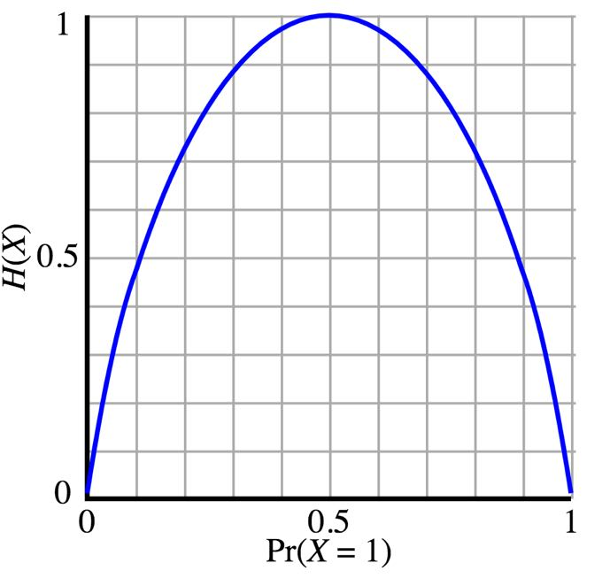

从这一讲开始，我们就沿着香农当年提出信息论的思路一点点抽丝剥茧，讲解信息理论。
我们先来讲讲信息的量化度量。我在第一讲问过你，佐尔格给斯大林的信息作用很大，但是信息量其实不到1比特，那到底怎么去衡量信息量的大小呢？在香农之前，人们并不认为信息还能像重量、体积、电流一样可以用什么单位去衡量。
人们过去绞尽脑汁试图从信息的内容出发，通过对比重要性，度量信息。香农说，这条路其实走错了。对于一条信息，重要的是找出其中有多少信息量，要搞清楚“信息量”，就要对信息进行量化的度量。但人们始终没找到量化度量信息的桥梁，也就是缺少一个合适的“衡量单位”，比如你用天平称重，需要在另一边摆放相应重量的砝码，那衡量信息的砝码是什么呢？
香农最大的贡献在于找到了这个“砝码”，也就是将信息的量化度量和不确定性联系起来。他给出一个度量信息量的基本单位，就是我们第一讲所讲的“比特”。
“比特”是这样定义的：如果一个黑盒子中有A和B两种可能性，它们出现的概率相同，那么要搞清楚到底是A还是B，所需要的信息量就是一比特。如果我们对这个黑盒子有一点知识，知道A的概率比B大，那么解密它们所需要的信息就不到一比特。
那么如果是多于A、B这两种可能性，更复杂的黑盒子，要消除它的不确定性需要多少信息呢？
比如我们做选择题四选一，或者猜世界杯足球赛的冠军是谁，他们想知道结果需要多少信息呢？有人说四选一需要四比特，猜出32个足球队参加的世界杯的冠军需要32比特。
这其实是不对的。如果我们对选择题的答案一无所知，去向一个知道答案的预言家请教，他每给你一个是非的答案，收取你一块钱。
对我们来讲，有效的提问方式不是问他“是否答案是A，或者是否答案是B”，而应该先问他，“是否答案在A、B中”。如果他回答“是”，我们就圈定答案的范围是A或者B，与C、D无关。
接下来，再问一个问题就能确定是A还是B了。反之，当我们知道答案不在A、B中，我们也可以用第二个问题确定是C还是D。这样我们一共付2块钱就可以了。
类似地，对于世界杯足球赛的问题，我们问五个问题，付5块钱就可以了。你可以自己在心里算一下。
当然，在信息论中不用钱来当信息的单位，而采用了比特。也就是说，要确定四选一问题的答案需要2比特信息，确定世界杯冠军的问题需要5比特信息。
我们把这样充满不确定性的黑盒子就叫做“信息源”，它里面的不确定性叫做“信息熵”，而“信息”就是用来消除这些不确定性的（信息熵），所以搞清楚黑盒子里是怎么一回事，需要的“信息量”就等于黑盒子里的“信息熵”。
我们知道，熵其实是一个热力学的概念，表示一个系统的无序状态，或者说随机性。比如把冰水倒进一杯开水中，它们会彼此融合，杯子里的“熵”，也就是混乱程度会增加；在信息系统中也是如此，信息熵则表示一个系统内部的不确定性。
我们都知道，一个系统中的状态数量，也就是可能性，越多，不确定性就越大；在状态数量保持不变时，如果各个状态的可能性相同，不确定性就很大；相反，如果个别状态容易发生，大部分状态都不可能发生，不确定性就小。这段原理其实很简单，你先记住它，接下来我给你详细讲解。
香农把这个原理呢，用公式表示出来了，从此信息不仅可以度量了，信息熵也可以计算了。信息熵的公式：

我们大家不用搞懂公式，但要明白这个公式的原理。我先解释什么叫“一个系统中的状态数量（即可能性）越多，不确定性就越大”。比如，你买彩票，只有两个号，其中一个必中彩，不确定性就小，那么这个问题的信息熵就小。如果有10000个号，也是其中有一个必中彩，那不确定性就大了。
接下来，我再解释这半句：“在状态数量保持不变时，如果各个状态的可能性相同，不确定性就很大……”我们现在假定可能性的数量是固定的，比如在只有两种情况时，也就是非A即B的情况，信息熵的变化图类似一个抛物线：

图中的横轴是A发生的概率，它从0到1分布，纵轴就是熵，也就是确定它发生，你需要的信息量。你会发现，当A发生的概率正好是1/2时需要的信息熵达到顶峰，是一比特。
这就类似抛一枚均质的硬币，谁也猜不好结果，因为正反两种结果发生的概率一样，都是1/2。但是，如果这枚硬币没造好，一面重，一面轻，那就大概率是重的那面朝下，需要确定它哪面朝下的信息量就小。
这告诉我们，永远不要听那些正确率总是50%的专家的建议，因为那相当于什么都没说，没有提供能够减少“信息熵”的“信息量”。这是今天的第一个知识点。
最后半句：“相反，如果个别状态容易发生，大部分状态都不可能发生，不确定性就小。”其实是这个意思：如果你买彩票要从10000个号里选出一个中奖的，不确定性就大多了。不过，如果其中一个号中彩的可能性是99%，剩下所有的号加起来的可能性只有1%，这个问题就比较确定，熵就小。
现在，你明白什么叫“一个系统中的状态数量，也就是可能性越多，不确定性就越大；在状态数量保持不变时，如果各个状态的可能性相同，不确定性就很大；相反，如果个别状态容易发生，大部分状态都不可能发生，不确定性就小。”这个原理了吧？
好，你知道了信息有单位，还可以通过公式计算，那又有什么用呢？
大家都知道赌球的庄家总是稳赚不赔，就觉得里面猫腻很多，这次我带你从信息论的角度来看清这个问题。你会发现其实很多类似的复杂难题都是信息熵的计算问题。
假如，我们能提前确定各个球队获得世界杯冠军的概率，设定它们分别是P1，P2，……，P32。那么我们套用上面的公式，就可以算出这件事需要多少信息，或者说这个问题的信息熵。
我们假定为3.4比特，或者说对应于3.4块钱。如果有一个人提一次问题支付一块钱，从理论上讲，所有参加赌局的人只要平均支付3.4块钱就能得到谁是冠军这个信息。
但是如果设定赌局的人将收费标准略微提高，提高到一个人平均4元。这里面的盈余就被设赌局的人拿走了。
那你会说，我们不可能提前知道概率，那每个球队得冠军的概率是如何预估的？其实这是我们这些下注的人告诉设赌局的人的。
如果大家都往德国队身上下注，结果预测德国获冠军的概率就很高，所以押注的多少其实就是大家给出的概率。
而开赌局的，只要收费比信息实际的价值高，都是稳赚不赔的。这里面的细节大家不用太在意，总之记住一点，就是开赌局的从来不是拿自家的钱和你对赌，而是让你们彼此互相赌，他通过变相多收费盈利。
很多人会讲，我不参加赌局，不会被开赌局的人赚走钱。其实上述这类赌局在金融市场更多。
你可能听说过“结构化的投资证券”（Structured Notes），比如说石油的价格上涨到100美元以上，每1美元高盛就付给你1.5美元。但是，如果没有到100美元，你需要每个月付给高盛1美元。这种投资工具，就被做成一种结构化的投资证券。
像航空公司或者运输公司因为害怕油价浮动太高，会购买这样的投资产品。那么你以为是高盛在和石油公司，或者其他人对赌么？不是的，因为高盛转手就将和它完全相反的投资产品，卖给了希望油价波动的人。当然，高盛会包装得很好，让两边都感谢它，其实它才是真正挣钱的一方。
你可能听说过金融数学这个专业，那里面的人天天做的事情就是设计这种不容易为人所看懂的，自己永远不赔钱的金融产品。而所谓的基金经理，很多就是把这样的产品卖给你的人。
因此，多了解信息论和基本的数学常识，可以在生活中省下不少冤枉钱。这是今天我想告诉你的第二个知识点，希望你知道，很多交易和产品都是利用了信息的可度量性，知道了这点，就可以看清很多复杂交易背后的原理。
掌握了信息量化度量的原理，你还可以用它来对付当今“信息过载”的问题，比如如何判断一篇报道里到底有多少信息量。
信息说到底是用于消除不确定性的。如果讲的事情大部分大家都知道，信息量就很少。这也是为什么那些心灵鸡汤的文章大家不愿意读，并非是它们说的不对，而是没有信息量。
和它们相反的是，我前面介绍的三篇改变世界的论文，都非常短，特别是沃森和克里克的那一篇，一页纸多一点，但是把我们过去不知道的DNA的结构讲清楚了。这个信息量就很大。
香农告诉大家，信息可以衡量，但不是用重要性，而是用信息量，单位是“比特”。
你可以把一个充满可能性的系统视为一个“信息源”，它里面的不确定性叫做“信息熵”，而“信息”就是用来消除这些不确定性的，所以搞清楚黑盒子里是怎么一回事，需要的“信息量”就等于黑盒子里的“信息熵”。
很多复杂交易背后其实都用到了信息的可度量性。
信息量的大小不在于长短，而在于开创多少新知。
这一讲我留给你的思考题是：如果你和一个特别会玩锤子、剪子、布游戏的人玩这个游戏，你最好的策略是什么呢？
预告：
有了信息的量化度量，我们就知道了信息的多少，但是如果我们还想知道具体的信息是什么，就需要对它们进行编码了。这是我们下一讲要讲的内容。